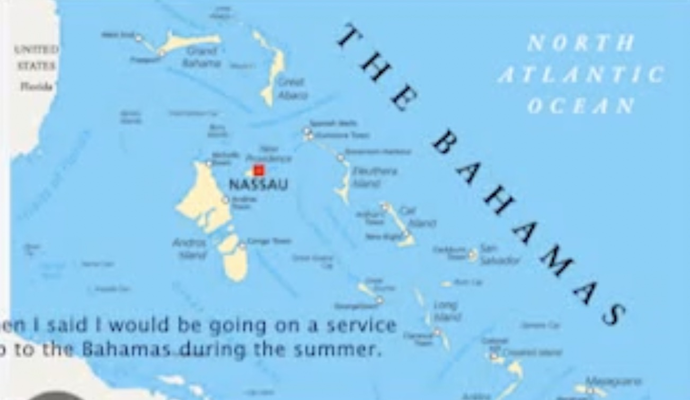
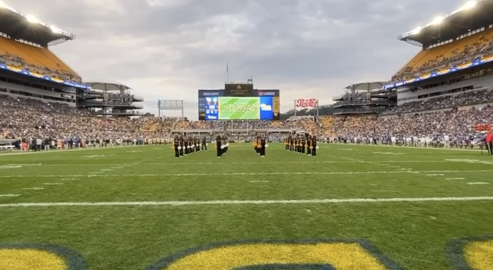
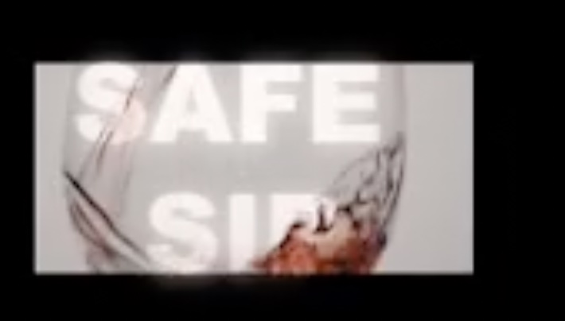
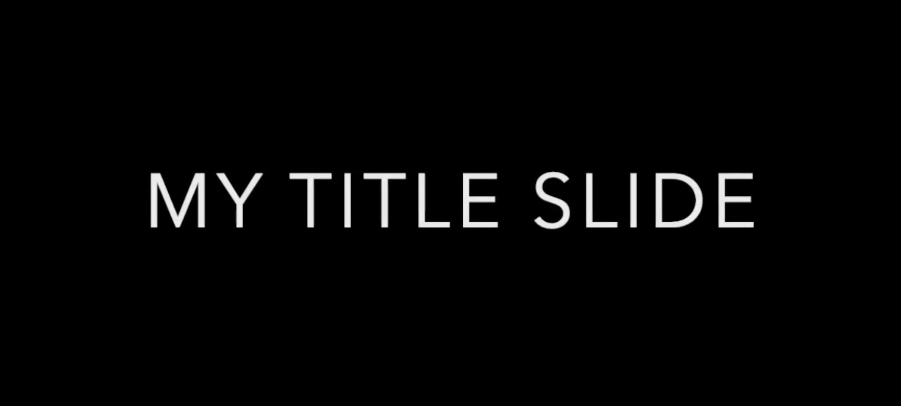
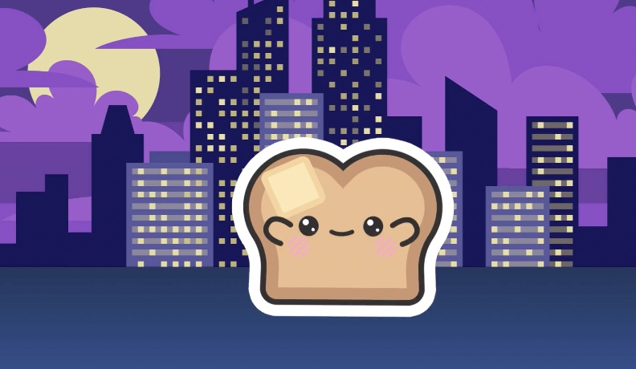

Image/ Text Essay

For this photo essay assignment meant to begin shaping ideas for my final project, I created a short visual piece exploring my service project from last year on the Abaco Island in the Bahamas. The task asked us to experiment with whether a project idea can be explored through image and text, and to begin engaging with Barthes’s Camera Lucida’s concepts.
As I worked through my images, I kept Barthes in mind. The studium for me was the documentary aspect of the trip like the destroyed buildings, the rebuilding efforts, and the everyday moments of the community. These were images that communicated the context and the broader meaning of the experience. But the punctum came through in smaller details: a child’s toy in the street or our candid expression that captured our excitement. These moments relate back to Barthes’s idea of photography as “what has been”.
I used Adobe Lightroom Classic to edit my images, adjusting saturation, color temperature, and contrast to bring out the natural color. In Adobe Premiere Pro, I assembled the photos into a 1–2 minute sequence, adding text to guide the viewer through the narrative and transitions to support the pacing. For audio, I layered upbeat music to reinforce our sense of excitement. I ultimately plan to explore a different topic for my final project, this assignment gave me a chance to experiment with the tools, consider how images can be combined with text and sound, and begin thinking about photographic meaning. It was a helpful start to understanding how my final project could develop.
Video Essay

For our B-Roll assignment which asked us to create a 1–2 minute edited collection of our own footage, I chose to work with material from a halftime dance performance at last year’s football game. Since the task encourages us to gather strong B-Roll that could later support a larger video project, I focused on creating visual variety by combining two different types of footage: our practice film and the final performance.
I edited the two clips by cutting back and forth between rehearsal moments and the polished on-field performance. This added an interesting dynamic and helped highlight the progression from learning the choreography to executing it live. In terms of filmmaking, the switches between practice and performance function as B-Roll that adds context and movement to the overall video.
Looking ahead, there are a few things I would like to improve if I include video editing in my final performance like, smoother transition and more dynamic editing. Overall, the project helped me think more intentionally about how B-Roll can be used to enhance storytelling through visual contrast and editing.
Special Effects in Premier Pro

For this assignment, I was originally thinking about an app that would touch on substance abuse particular alcohol. I chose the project title “Safe Sip” to match the concept of the app I was designing for. I experimented with effects to create a simple but visually engaging animation: a wine glass that gradually fills up with wine. This effect helped me practice timing, masking, and motion, and it visually represents the theme of mindful or moderated drinking. After creating the animation, I exported the final piece as an MP4 and prepared it for upload to YouTube as required.
Adobe After Effect Animation

For this export assignment, I followed the required steps to render the final MP4. The piece I created was a title slide where the image slowly appears and expands on the screen, giving the opening a smooth, polished look that helps draw the viewer in before the main content begins.
Working in After Effects was very challenging at first because there are so many options, effects, keyframes, presets, blending modes, and different ways to animate even a simple image. It was honestly overwhelming trying to decide which tools to use and how to control them. I spent a lot of time experimenting and trying things out just to understand how certain setting changed the movement or appearance of the image. Overall, this assignment helped me get more comfortable navigating After Effects and start learning how to use its tools to create motion graphics.
Adobe Charecter Creator

For this assignment, we experimented with Adobe Character Creator to build an animated character that could be performed using our own facial expressions. The goal was to design a character who introduces our project using stasis theory.
For my project, I created a talking piece of toast. I chose toast because it adds a playful and unexpected personality to the topic I’m focusing on: food in Pittsburgh. Using Adobe’s character tools, I animated the toast so it could talk, react, and deliver the information in a light-hearted way while still addressing the stasis theory. The character explains what kinds of food are found in Pittsburgh, local food, why it matters, and why people should try it.
The assignment helped me explore character creation, lip-sync animation, and expressive storytelling while still keeping the content structured. This was my favorite one.
.
Phase 2/3 Course Goals
1. Foster the creative habits of mind
The following assignments helped develop creative habits by encouraging experimentation, problem solving, and reflection. For example, the photo essay pushed me to think critically about visual storytelling, using Barthes’s theory to notice how images can create meaningful details. The B-Roll video required experimentation with editing choices, pacing, and transitions, teaching me how to combine footage in ways that will enhance a narrative. Finally, creating the talking toast character in Adobe Character Creator encouraged playful imagination, while also requiring me to structure content clearly using stasis theory. Each project asked for both technical skill and imaginative thinking, helping me build habits of exploration.
2. Engage with others in a workshop environment
These assignments helped me engage with others in workshop by encouraging feedback and collaborative problem-solving. For instance, sharing my photo essay and B-Roll video allowed peers to suggest editing techniques and visual ideas I hadn’t considered. This not only helped me troubleshoot technical challenges but also inspired elements I wanted to include in my final project. Seeing other students’ creative approaches like the ai music or the domestic violence project pushed me to experiment more boldly.
3. Think deeply about craft
Our projects helped me think deeper about craft by encouraging experimentation and intentional choices. The “Safe Sip” animation taught me how timing, masking, and motion can convey a concept visually and it doesn’t have to be grand or complicated. The export assignment with After Effects showed me how even small design decisions like easing a slide-in or adjusting keyframes affect the flow of a piece. Creating the talking toast character highlighted the importance of personality, expression, and pacing in storytelling to grab and keep the user’s attention. Overall, these projects helped me see that craft isn’t just technical skill but it’s about using every tool intentionally to create meaning.
4. Engage in sustained research and skills development.
These assignments helped me engage in sustained research by requiring me to think beyond just capturing or creating visuals and consider context, purpose, and audience. For the photo essay, I had to revisit my experiences on Abaco Island, reflecting on the community, the rebuilding efforts, and meaningful details to select images that conveyed both visual context and emotional impact. The B-Roll helped me analyze footage carefully, comparing rehearsal and performance clips to see what best showed progression and storytelling. Even in the animation projects, I did outside researched on visual techniques and tutorials to help complete the assignment. Across all of them, I learned to gather information, experiment, which strengthened my ability to research beyond the task given and to do so more thoughtfully.
5. Learn to present your work
As the weeks go on, I looked forward to presenting more and more. Presenting work weekly was a good way to gage my audience experiences the story the way I intend. By teaching me how to think intentionally about how an audience experiences my ideas, I learned to organize content in a clear and engaging way, paying attention to flow, pacing, and emphasis. I also developed a sense of how visual, auditory, and textual elements work together to support meaning, and how small details can make a big difference in how professional a presentation feels. Additionally, the process of experimenting, revising, and refining taught me that presenting work effectively involves careful planning and not just finishing a project.